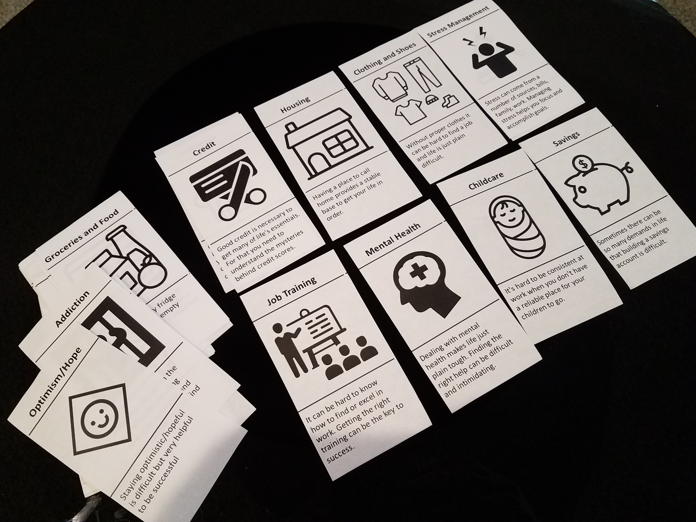

Summer Internship-Human-Centered Designer
 Summary
Summary
Role: Human-Centered Designer
Time frame: 3 months
Tools: Adobe Illustrator, Adobe InDesign, Visio, MS Powerpoint
Methods: Brainstorming, Contextual Inquiry, Fly on the wall, Needs Assessment, Market Research, Interviews, Visual Design, Project Management
Throughout this summer I worked as a Human-Centered Designer in the Customer Insights team within Cummins. Customer Insights team is encouraging different team within Cummins to adopt Human-Centered Design methodology and also provides Human-Centered Design training to the people that want to use it on their projects. There is an extreme demand in the company to adopt human-centered design methodology. I got Luma's Human-Centered training throughout my internship and got certifed as well.
I worked on 3 important projects that proved to be very beneficial for the organization which are as follows:
- Worked with a fellow intern on a project with a non-profit organization where we used Human-Centered Design which will serve as a business model for other projects within Cummins. This project was the first ever project focussing on a non-profit organization using Human-Centered Design methodology in Cummins. This project is going to serve as a business model for other projects within Cummins usins Human-Centered Design. Our work was so impressive that 2 other team within Cummins working on projects with Sans Souci used our research data for their projects to get better results.
Check out the final report: click here - Researched employees' perception,adoption and understanding of Human-Centered Design and came up with strategies for the team to use to improve the facilitation of Human-Centered Design
- Conducted an external research to find out how other similar organizations like Cummins leverage the power of Human-Centered Design and came up with strategies for the team to adopt Please check out the report click here
Check out final presentation: click here c
Project 1
 Goal
Goal
Use Human-Centered Design as a means to help Sans Souci increase their capability to have the greatest impact on the most lives
 Design Process
Design Process
 Discover Phase
Discover Phase
I and the fellow intern spent 2 weeks trying to understand how Sans Souci impacts the community by using the following different techniques
- Interviewed 30 different kind of stakeholdersto understand their take on Sans Souci
- Performed contextual inquiry and did fly on the wall to understand the working of Sans Souci
- Spoke to stakeholders from Cummins to understand their expectations
 Define Phase
Define Phase
From the collected data we came up with a problem that was very different from what Sans Souci wanted us to address. Sans Souci had thought that the free assistance service that they provide to underpriviledged needs improvement.
However, our extensive research lead us to a understanding that most impactful area by Sans Souci is their employee development program. However, there was no strcture to it and there were a lot of improvements needed which would lead to an overall development of Sans Souci as an organization. We used to following techniques that lead us to the key problem
- Stakeholder map: To better understand the stakeholders and their stake within Sans Souci
- Rose Thorn Buds + Affinity Clustering: Divided the interview notes into rose(positives), thorns(negatives) and buds(opportunities) and built an affinity wall to indentify the leading themes
- Stakeholder Workshop: We organized a two-day workshop including different stakeholders and presented them with our findings. We used HCD methods like 'How might we' and 'Importance difficulty matrix' that lead us 3 themes that they cared about the most
- Problem Scoping: Based on the above themes, we made use of abstract laddering to scope the problem. The problem statement was as follows: To improve Sans Souci's capabilities to become an employee development organization
- Contract Creation: Created an official contract listing out the risks, timeline, stakeholders,resources, etc. Even though the problem was different from what they had originally posed keeping the stakeholders a part of our process really helped them to approve it without any denial. I learned project management skills from my mentor while creating the contract

 Develop Phase
Develop Phase
After identifying the problem, we dived deeper into the employee development process of Sans Souci. We thought that understanding the needs of the community is the most important part of the problem. We executed the following steps that got us to the final solution:
- External Organizations: We spoke to external organizations like Human Services, Housing Authority, Bartholomew COunty works to understand the needs of the people in Bartholomew county. It helped us to understand the resources that are available which Sans Souci could use to improve their employee development program.
- Needs Cards and Mental model: Employees at Sans Souci come from difficult backgrounds. It was very challenging for us to figure out a way through which they would open up and tell us the difficulties they are facing and how Sans Souci impacted their lives. Interviews wouldn't work in this context so we invented a technique called Need Cards that made them open up very easily.

- Personas: Based on the data collected from the previous step, we came up with 4 different kind of employees who work at Sans Souci and listed out their goals and key challenges. The personas really helped us in coming up with the solution which was customized based on the personas.
- Sans Souci as an airport: To make stakeholders better understand the personas and their roles in Sans Souci we came up with an illustration of Sans Souci as an airport. We came up with a category name for every persona in the context of an airplanes' journey in Sans Souci airport.
- Non-profit Organization workshop:Based on the artifacts and information we generated, we organized an external non-profit organization workshop. People from 10-12 different non-profits participated in the workshop. We made use of HCD methods like round robin and visualize the vote. We divided the people into 4 groups where each group was assigned a persona. The task of each group was to develop an employee development plan for the persona assigned to them using the round robin method. Later, visualize the vote was used to shorlist the best ideas.
- Reflection: Based on the ideas and our thorough research, we started braisntorming different solutions that would make employee development process effective for each employee working at Sans Souci.


 Deliver Phase
Deliver Phase
Based on the most voted solutions prosented in workshop and our previous coversation with employees, we divided the journey at Sans Souci into three parts: Onboarding, Stabilizing, Further Development. We came up with a persona specific development plan as well as a list of potential solutions that Sans Souci can have to support the development plan. We also developed a maturiy curve that shows how Sans Souci would evolve to become an employee development organization. Please find the final report showcasing the deliverables here
Currently our solutions are being executed by 2 teams in Cummins who later merged with us and utilized the research data we collected for their projects. Our project just three months old proved to be an umbrella project for many other projects within Cummins working on Sans Souci.
Project 2 and 3
Goal
:Decrypt the Perception, Understanding, Acceptance of Human-Centered Design within Cummins and how external organizations leverage the power of Human-Centered Design
 Process
Process
- Interviews: Created an interview protocol and interviewed 40 stakeholders across the globe in Cummins to assess the impact of culture and business function of Human-Centered Design
- Rose,Thorn,Buds and, Affinity Clustering: Clustered the data collected to come up with themes. Also, came up with key findings from it.
- External Research: Read white papers,blogs and information posted by other organizations to understand how other organizations leverage the impact of Human-Centered Design methodology within their organization. Also, identifed various techniques that companies use to adopt the design thinking culture within their company.
- Final Deliverable: Created a report presenting the insights I gained. I came up with different set of ideas that Human-Centered Design team can use to improve their facilitation of Human-Centered Design. Insights generated by me were very eye-opening and the team is using it to develop an enhanced training of Human-Centered Design.